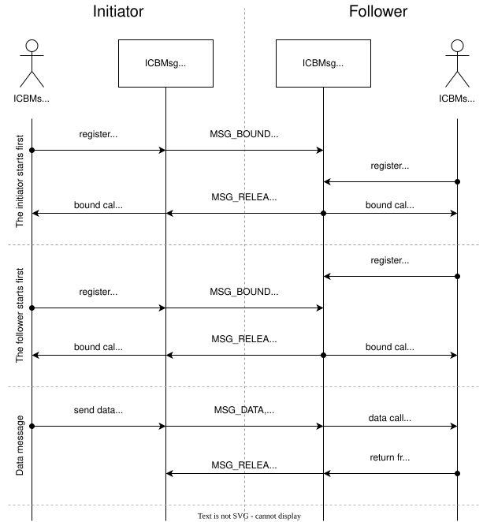

ICMsg with dynamically allocated buffers backend
This backend is built on top of the ICMsg backend. Data transferred over this backend travels in dynamically allocated buffers on shared memory. The ICMsg just sends references to the buffers. It also supports multiple endpoints.
This architecture allows for overcoming some common problems with other backends (mostly related to multithread access and zero-copy). This backend provides an alternative with no significant limitations.
Overview
The shared memory is divided into two parts. One is reserved for the ICMsg and the other contains equal-sized blocks. The number of blocks is configured in the devicetree.
The data sending process is following:
The sender allocates one or more blocks. If there are not enough sequential blocks, it waits using the timeout provided in the parameter that also includes K_FOREVER and K_NO_WAIT.
The allocated blocks are filled with data. For the zero-copy case, this is done by the caller, otherwise, it is copied automatically. During this time other threads are not blocked in any way as long as there are enough free blocks for them. They can allocate, send data and receive data.
A message containing the block index is sent over ICMsg to the receiver. The size of the ICMsg queue is large enough to hold messages for all blocks, so it will never overflow.
The receiver can hold the data as long as desired. Again, other threads are not blocked as long as there are enough free blocks for them.
When data is no longer needed, the backend sends a release message over ICMsg.
When the backend receives this message, it deallocates all blocks. It is done internally by the backend and it is invisible to the caller.
Configuration
The backend is configured using Kconfig and devicetree. When configuring the backend, do the following:
If at least one of the cores uses data cache on shared memory, set the
dcache-alignmentvalue. This must be the largest value of the invalidation or the write-back size for both sides of the communication. You can skip it if none of the communication sides is using data cache on shared memory.Define two memory regions and assign them to
tx-regionandrx-regionof an instance. Ensure that the memory regions used for data exchange are unique (not overlapping any other region) and accessible by both domains (or CPUs).Define the number of allocable blocks for each region with
tx-blocksandrx-blocks.Define MBOX devices for sending a signal that informs the other domain (or CPU) of the written data. Ensure that the other domain (or CPU) can receive the signal.
Caution
Make sure that you set correct value of the dcache-alignment.
At first, wrong value may not show any signs, which may give a false impression that everything works.
Unstable behavior will appear sooner or later.
See the following configuration example for one of the instances:
reserved-memory {
tx: memory@20070000 {
reg = <0x20070000 0x0800>;
};
rx: memory@20078000 {
reg = <0x20078000 0x0800>;
};
};
ipc {
ipc0: ipc0 {
compatible = "zephyr,ipc-icbmsg";
dcache-alignment = <32>;
tx-region = <&tx>;
rx-region = <&rx>;
tx-blocks = <16>;
rx-blocks = <32>;
mboxes = <&mbox 0>, <&mbox 1>;
mbox-names = "tx", "rx";
status = "okay";
};
};
You must provide a similar configuration for the other side of the communication (domain or CPU).
Swap the MBOX channels, memory regions (tx-region and rx-region), and block count (tx-blocks and rx-blocks).
Samples
Detailed Protocol Specification
The ICBMsg protocol transfers messages using dynamically allocated blocks of shared memory. Internally, it uses ICMsg for control messages.
Message Transfer
The ICBMsg uses following two types of messages:
Binding message - Message exchanged during endpoint binding process (described below).
Data message - Message carrying actual data from a user.
They serve different purposes, but their lifetime and flow are the same. The following steps describe it:
The sender wants to send a message that contains
Kbytes.The sender reserves blocks from his
tx-regionblocks area that can hold at leastK + 4bytes. The additional+ 4bytes are reserved for the header, which contains the exact size of the message. The blocks must be continuous (one after another). The sender is responsible for block allocation management. It is up to the implementation to decide what to do if no blocks are available.The sender fills the header with a 32-bit integer value,
K(little-endian).The sender fills the remaining part of the blocks with his data. Unused space is ignored.
The sender sends an
MSG_DATAorMSG_BOUNDcontrol message over ICMsg that contains starting block number (where the header is located). Details about the control message are in the next section.The control message travels to the receiver.
The receiver reads message size and data from his
rx-regionstarting from the block number received in the control message.The receiver processes the message.
The receiver sends
MSG_RELEASE_DATAorMSG_RELEASE_BOUNDcontrol message over ICMsg containing the starting block number (the same as inside received control message).The control message travels back to the sender.
The sender releases the blocks starting from the block number provided in the control message. The number of blocks to release can be calculated using a size from the header.
Control Messages
The control messages are transmitted over ICMsg. Each control message contains three bytes. The first byte tells what kind of message it is.
The allocated size for ICMsg ensures that the maximum possible number of control messages will fit into its ring buffer, so sending over the ICMsg will never fail because of buffer overflow.
MSG_DATA
byte 0 |
byte 1 |
byte 2 |
|---|---|---|
MSG_DATA |
endpoint address |
block number |
0x00 |
0x00 ÷ 0xFD |
0x00 ÷ N-1 |
The MSG_DATA control message indicates that a new data message was sent.
The data message starts with a header inside block number.
The data message was sent over the endpoint specified in endpoint address.
The endpoint binding procedure must be finished before sending this control message.
MSG_RELEASE_DATA
byte 0 |
byte 1 |
byte 2 |
|---|---|---|
MSG_RELEASE_DATA |
unused |
block number |
0x01 |
0x00 ÷ N-1 |
The MSG_RELEASE_DATA control message is sent in response to MSG_DATA.
It informs us that the data message starting with block number was received and is no longer needed.
When this control message is received, the blocks containing the message must be released.
MSG_BOUND
byte 0 |
byte 1 |
byte 2 |
|---|---|---|
MSG_BOUND |
endpoint address |
block number |
0x02 |
0x00 ÷ 0xFD |
0x00 ÷ N-1 |
The MSG_BOUND control message is similar to the MSG_DATA except the blocks carry binding information.
See the next section for details on the binding procedure.
MSG_RELEASE_BOUND
byte 0 |
byte 1 |
byte 2 |
|---|---|---|
MSG_RELEASE_BOUND |
endpoint address |
block number |
0x03 |
0x00 ÷ 0xFD |
0x00 ÷ N-1 |
The MSG_RELEASE_BOUND control message is sent in response to MSG_BOUND.
It is similar to the MSG_RELEASE_DATA except the endpoint address is required.
See the next section for details on the binding procedure.
Initialization
The ICBMsg initialization calls ICMsg to initialize. When it is done, no further initialization is required. Blocks can be left uninitialized.
After ICBMsg initialization, you are ready for the endpoint binding procedure.
Endpoint Binding
So far, the protocol is symmetrical. Each side of the connection was the same. The binding process is not symmetrical. There are following two roles:
Initiator - It assigns endpoint addresses and sends binding messages.
Follower - It waits for a binding message.
The roles are determined based on the addresses of the rx-region and tx-region.
If
address of rx-region < address of tx-region, then it is initiator.If
address of rx-region > address of tx-region, then it is follower.
The binding process needs an endpoint name and is responsible for following two things:
To establish a common endpoint address,
To make sure that two sides are ready to exchange messages over that endpoint.
After ICMsg is initialized, both sides can start the endpoint binding. There are no restrictions on the order in which the sides start the endpoint binding.
Initiator Binding Procedure
The initiator sends a binding message. It contains a single null-terminated string with an endpoint name. As usual, it is preceded by a message header containing the message size (including null-terminator).
Example of the binding message for example endpoint name:
Header |
Endpoint name |
Null-terminator |
|---|---|---|
bytes 0-3 |
bytes 4-10 |
byte 11 |
0x00000008 |
|
0x00 |
The binding message is sent using the MSG_BOUND control message and released with the MSG_RELEASE_BOUND control message.
The endpoint binding procedure from the initiator’s point of view is the following:
The initiator assigns an endpoint address to this endpoint.
The initiator sends a binding message containing the endpoint name and address.
The initiator waits for any message from the follower using this endpoint address. Usually, it will be
MSG_RELEASE_BOUND, butMSG_DATAis also allowed.The initiator is bound to an endpoint, and it can send data messages using this endpoint.
Follower Binding Procedure
If the follower receives a binding message before it starts the binding procedure on that endpoint, it should store the message for later.
It should not send the MSG_RELEASE_BOUND yet.
The endpoint binding procedure from the follower’s point of view is the following:
The follower waits for a binding message containing its endpoint name. The message may be a newly received message or a message stored before the binding procedure started.
The follower stores the endpoint address assigned to this endpoint by the initiator.
The follower sends the
MSG_RELEASE_BOUNDcontrol message.The follower is bound to an endpoint, and it can send data messages using this endpoint.
Example sequence diagrams
The following diagram shows a few examples of how the messages flow between two ends. There is a binding of two endpoints and one fully processed data message exchange.

Protocol Versioning
The protocol allows improvements in future versions. The newer implementations should be able to work with older ones in backward compatible mode. To allow it, the current protocol version has the following restrictions:
If the receiver receives a longer control message, it should use only the first three bytes and ignore the remaining.
If the receiver receives a control message starting with a byte that does not match any of the messages described here, it should ignore it.
If the receiver receives a binding message with additional bytes at the end, it should ignore the additional bytes.